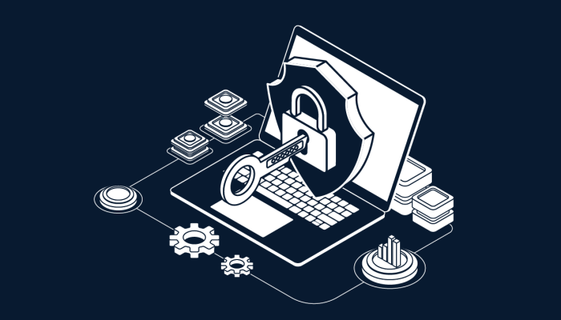

El baloncesto es un deporte en el que dos equipos tratan de meter una pelota en un aro alto.
Cada equipo tiene cinco jugadores y el objetivo es anotar más puntos que el otro equipo.
Los jugadores pueden correr, pasar y lanzar la pelota, y tratan de evitar que el otro equipo anote.

Ciberseguridad:
La ciberseguridad se refiere a la protección de los dispositivos,
redes y sistemas informáticos contra el acceso no autorizado,
el robo de información, el malware y otros tipos de ciberataques.
Brawl Stars:
Brawl Stars es un juego de estrategia y acción para dispositivos móviles en el que dos equipos
de tres jugadores cada uno compiten en un escenario para recolectar cristales y defenderlos de los oponentes.
El objetivo del juego es recolectar la mayor cantidad de cristales posible antes de que se acabe el tiempo o
eliminar a todos los miembros del equipo contrario.